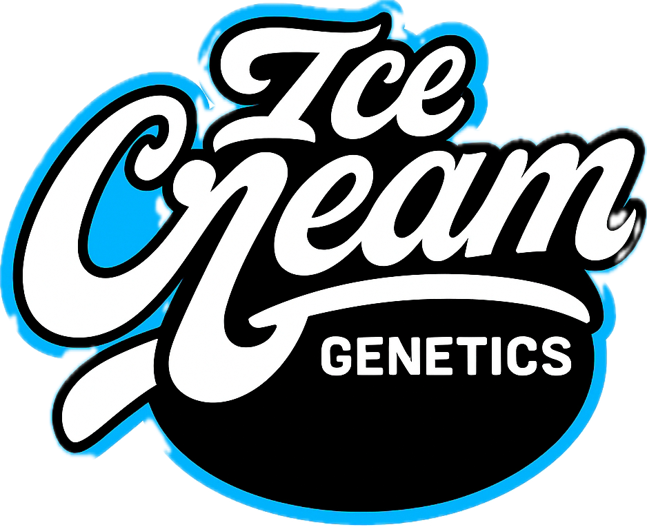
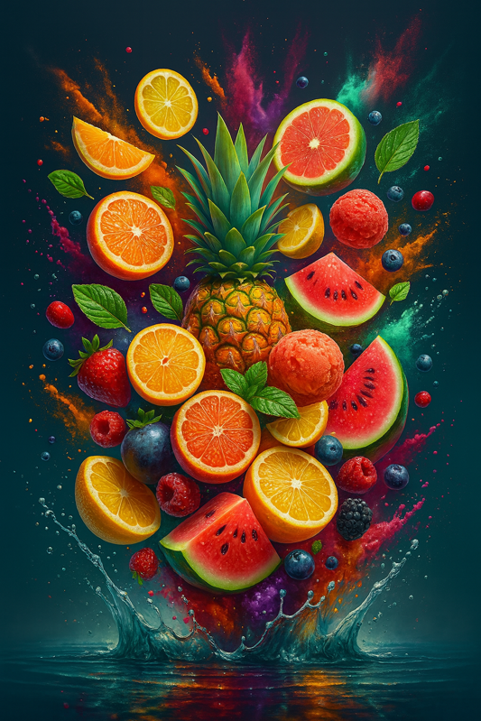
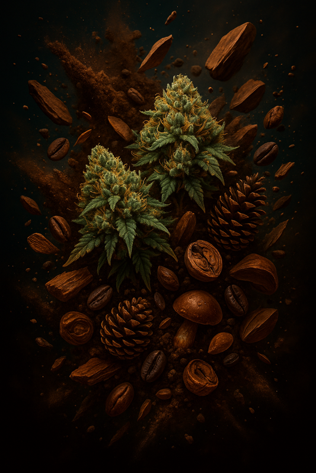

Genética de élite cultivada con pasión y conocimiento avanzado
SOBRE NOSOTROS
En Icecream Genetics combinamos ciencia botánica avanzada con pasión por la planta. Fundado por un equipo de biólogos y cultivadores con más de 20 años de experiencia, nos especializamos en desarrollar variedades únicas y de alto rendimiento.
Nuestro proceso utiliza técnicas sostenibles de vanguardia y escrutinios de calidad exhaustivos para garantizar genéticas con perfiles de terpenos excepcionales y pureza genómica certificada.
Cada semilla representa nuestro compromiso con la excelencia cannabica, ofreciendo experiencias sensoriales únicas a cultivadores exigentes.
LÍNEAS GENÉTICAS
Seleccione una línea para explorar nuestras variedades premium
MIX TROPICAL
Sabor explosivo y perfiles cítricos vibrantes

TERPENO TERROSO
Sabores complejos con tonos a tierra y maderas

Seleccione una línea genética para ver las variedades
Haga clic en "MIX TROPICAL" o "TERPENO TERROSO" arriba para ver las variedades disponibles.
VARIEDADES {{ currentCatalog === 'tropical' ? 'MIX TROPICAL' : 'TERPENO TERROSO' }}
{{ strain.flavor }}
{{ strain.flavor }}